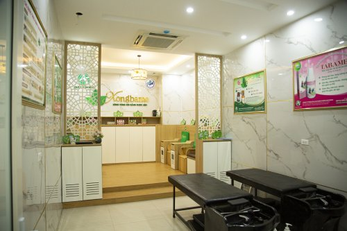
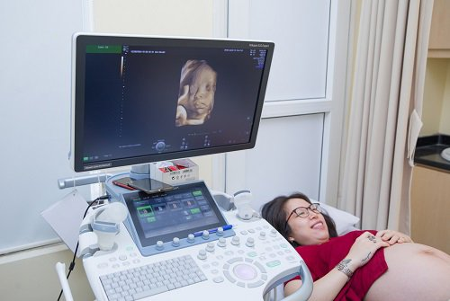

Thời gian làm việc: 07h00 - 16h45 từ Thứ 2 đến Chủ nhật
Trực cấp cứu: 0941.334.115 Trực lãnh đạo:0944.885.626


KHOA SẢN - PHỤ
Đăng lúc: 07:37:19 10/08/2021 (GMT+7)
Khoa sản - Phụ
Khoa Phụ - Sản
Khoa Phụ sản Bệnh viện đa khoa Đại An cung cấp dịch vụ chẩn đoán, điều trị sâu rộng, hiệu quả cho các vấn đề bệnh lý thuộc chuyên ngành sản phụ khoa. Đội ngũ y bác sỹ Sản phụ khoa có nhiều kinh nghiệm, tận tâm, tận tình cùng trang thiết bị hiện đại. Khách hàng được cam kết chăm sóc chu đáo, riêng biệt theo từng vấn đề bệnh lý trong một môi trường thân thiện – chuyên nghiệp – chu đáo.
NHỮNG DỊCH VỤ NỔI BẬT CỦA KHOA PHỤ SẢN
Về dịch vụ Sản
· Xét nghiệm thai sớm
· Khám thai, siêu âm, theo dõi tăng trưởng định kỳ của thai nhi
· Dịch vụ sàng lọc trước sinh, giúp phát hiện sớm nguy cơ dị tật thai nhi
· Chăm sóc sản phụ có nguy cơ cao
· Cung cấp dịch vụ thai sản trọn gói từ tuần 8 đến khi sinh
· Dịch vụ mổ lấy thai
· Dịch vụ sinh thường không đau bằng phương pháp gây tê ngoài màng cứng
Dịch vụ Thai sản trọn gói – Món quà ý nghĩa cho mẹ bầu
Với mong muốn được đồng hành, hỗ trợ và mang đến những điều tuyệt vời, hạnh phúc nhất cho mẹ và bé, Bệnh viện Đa Khoa Đại An đã cung cấp dịch vụ thai sản trọn gói với các gói thai sản trọn gói tuần 8, 16, 28, 36, chuyển dạ. Với chương trình thai sản trọn gói đa dạng, phù hợp với tất cả các mẹ bầu, mẹ và bé sẽ được chăm sóc toàn diện trước, trong và sau khi sinh. Trong suốt thai kỳ, các mốc khám thai, siêu âm thai, xét nghiệm đã được lên lịch rõ ràng, cụ thể để mẹ không bỏ qua bất kỳ lần thăm khám quan trọng nào.
Ngoài ra, khi nhập viện sinh nở mẹ và gia đình cũng không phải “tay xách nách mang” bởi mọi đồ dùng lưu viện cho mẹ và bé đều được bệnh viện chuẩn bị đầy đủ. Công nghệ giảm đau hiện đại, tiên tiến giúp cho quá trình vượt cạn của mẹ bầu diễn ra tan toàn, nhanh chóng, không đau.
Trong suốt thời gian lưu viện, mẹ và bé sẽ được chăm sóc đặc biệt 24/24 bởi những điều dưỡng viên giàu kinh nghiệm, từng công tác tại nhiều bệnh viện lớn. Với những nỗ lực không ngừng, khoa Phụ Sản – Bệnh viện Đa khoa Đại An tự hào đỡ đầu các em bé chào đời bình an, khỏe mạnh và là chỗ dựa vững chắc để các gia đình yên tâm đón nhận khoảnh khắc đón con yêu một cách trọn vẹn nhất.
Về dịch vụ Phụ khoa
· Khám và điều trị các bệnh phụ khoa như viêm âm đạo, kinh nguyệt không đều, rong kinh, bệnh lây qua đường tình dục (giang mai…)
· Khám, điều trị nội khoa, phẫu thuật các bệnh phụ khoa như u xơ tử cung, u nang buồng trứng, polyp tử cung…
· Tầm soát sớm các bệnh ung thư phụ khoa như ung thư vú, ung thư cổ tử cung, buồng trứng, chửa ngoài tử cung…
· Kiếm tra các dấu hiệu vô sinh
· Tư vấn sức khỏe sinh sản và cung cấp các biện pháp kế hoạch hóa gia đình (đặt vòng, cấy que…)
Khám và tư vấn sức khỏe tiền mãn kinh
CƠ SỞ VẬT CHẤT TIỆN NGHI
Được xác định là chuyên khoa mũi nhọn của bệnh viện, khoa Phụ Sản được đầu tư mạnh về cơ sở vật chất nhằm mang lại chất lượng dịch vụ tốt nhất, đồng thời tạo không khí vui vẻ, ấm cúng, thoải mái, dễ chịu cho các chị em trong suốt quá trình khám chữa bệnh cũng như theo dõi thai kỳ, sinh nở tại đây. Nhờ vậy, khoa Phụ Sản – Bệnh viện Đa khoa Đại An đã trở thành một một trong những địa chỉ khám phụ khoa và cung cấp dịch vụ thai sản trọn gói tốt nhất hiện nay

Phòng xông hơi hiện đại, đạt tiêu chuẩn 5 sao
Phòng yêu cầu sang trọng, chuẩn tiện nghi
TRANG THIẾT BỊ HIỆN ĐẠI, CÔNG NGHỆ TỐI TÂN
Hội tụ đầy đủ yếu tố vượt trội của một cơ sở y tế chất lượng cao, khoa Phụ Sản – Bệnh viện Đa khoa Đại An luôn được chú trọng đầu tư trang thiết bị tối tân, ứng dụng công nghệ hiện đại nhất như máy siêu âm 5D, máy chiếu tia Plasma, máy soi cổ tử cung, máy Doppler, hệ thống xét nghiệm robot tự động, máy gây mê kèm thở Drager – Fabius Plus (Đức), dàn nội soi Karl Storz (Đức), máy Monitor theo dõi bệnh nhân 5 thông số (Mỹ), bồn rửa tay tiệt trùng, dao điện cao tần 350W, Máy bơm khí CO2 ổ bụng… được nhập khẩu từ nước ngoài cho kết quả chẩn đoán hình ảnh chính xác, giúp tiên lượng bệnh sớm nhất để đưa ra giải pháp xử lý kịp thời, hiệu quả điều trị cao.
.
ĐỘI NGŨ BÁC SĨ GIỎI ĐẦU NGÀNH
Đội ngũ Bác sỹ có trình độ chuyên môn cao và giàu y đức
Một trong những điều quan trọng nhất làm nên thương hiệu của khoa Phụ Sản – Bệnh viện Đa khoa Đại An chính là đội ngũ bác sĩ Sản khoa đầu ngành có nhiều năm công tác tại các bệnh viện tuyến trung ương, tuyến tỉnh và bệnh viện Quốc tế. Đây đều là những chuyên gia giỏi, có trình độ chuyên môn cao, dày dặn kinh nghiệm, xử lý an toàn những ca khó như thai ngoài tử cung ở rãnh đại tràng lên, mổ đẻ kết hợp với bóc u xơ tử cung, u nang buồng trứng, triệt sản, mổ đẻ liên tiếp nhiều lần, thai ngôi ngang, dây rốn thắt nút…
Không chỉ có vậy, đội ngũ bác sĩ của khoa Phụ Sản còn vô cùng tâm lý, thân thiện, chu đáo, tận tâm nên được vô vàn chị em trên khắp nơi tin tưởng, gửi gắm.
Khoa Phụ Sản – Bệnh viện Đa khoa Đại An đã và đang là một trong những địa chỉ cung cấp dịch vụ chăm sóc sức khỏe uy tín, tin cậy của rất nhiều chị em phụ nữ. Các dịch vụ thăm khám và điều trị tại khoa Phụ Sản có áp dụng thanh toán bảo hiểm y tế theo đúng quy định nhà nước.
Các tin khác